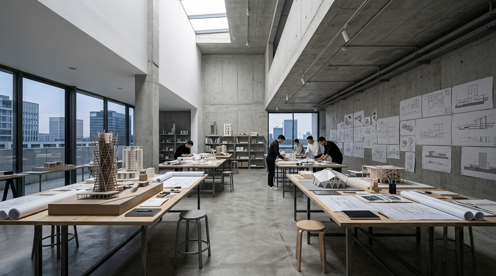
우리가 믿는
건축
좋은 건축은 눈에 보이지 않습니다.
그곳에 머무는 사람이 자연스럽게 살아가는 것,
그것이 설계의 완성입니다.
우리는 대지를 읽고, 빛의 방향을 따라가며, 그 안에서 살아갈 사람들의 이야기를 공간으로 번역합니다. 과하지 않되 부족하지 않은 — 그 정확한 지점을 찾는 것이 스튜디오 아키브의 설계 철학입니다.
설계의 여정
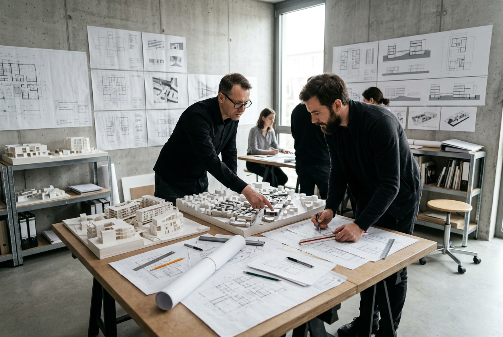
대지를 읽는 것에서 시작해, 공간이 숨 쉬는 순간까지.
대지 방문
모든 프로젝트는 대지를 직접 걷는 것에서 시작합니다. 땅의 경사, 빛의 방향, 주변의 소리까지 — 눈에 보이지 않는 것들을 기록합니다.
콘셉트 설계
대지의 이야기와 거주자의 삶이 만나는 지점을 찾습니다. 스케치와 다이어그램으로 공간의 뼈대를 구상합니다.
기본 설계
콘셉트를 실현 가능한 도면으로 발전시킵니다. 구조, 설비, 마감재를 통합적으로 고려합니다.
실시 설계
시공을 위한 상세도면과 시방서를 완성합니다. 1mm의 오차도 허용하지 않는 정밀한 도면 작업입니다.
감리
도면이 현장에서 정확히 실현되도록 감독합니다. 완공의 순간까지, 설계 의도를 지켜냅니다.
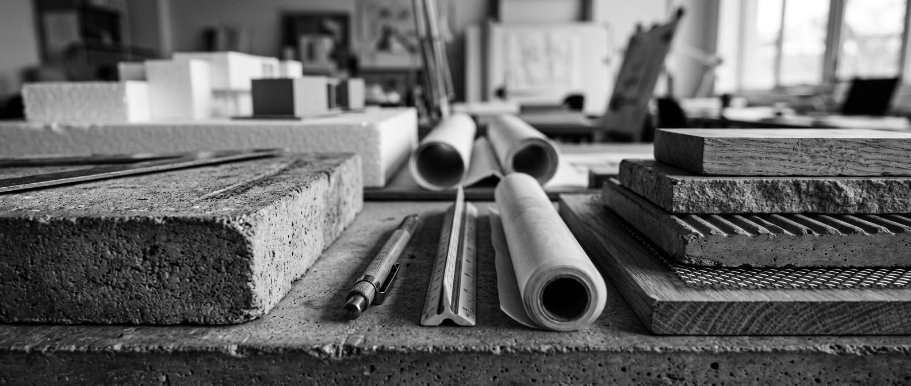
"건축은 빛으로 쓰는 시"
선택된 작업들
주거, 상업, 문화 — 규모와 용도를 넘어
각 프로젝트가 품은 이야기를 설계합니다.
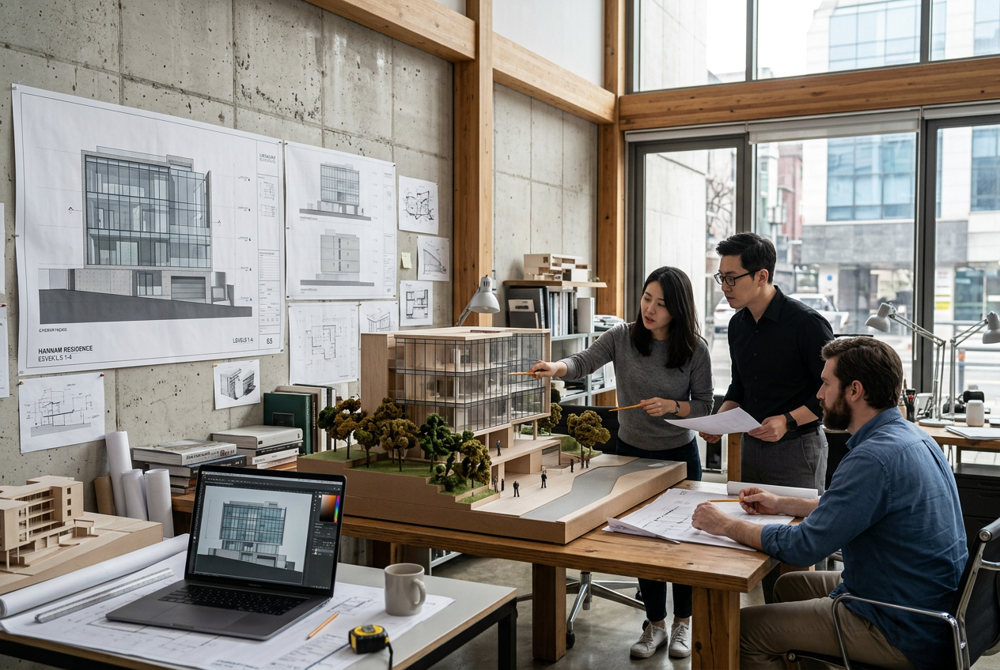
한남 레지던스
서울 용산구 · 298㎡
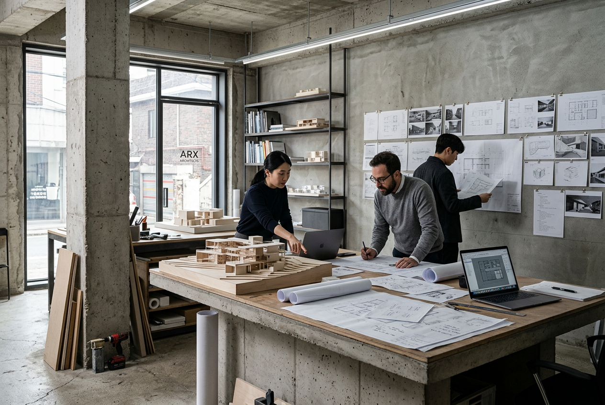
성수 카페 리노베이션
서울 성동구 · 186㎡
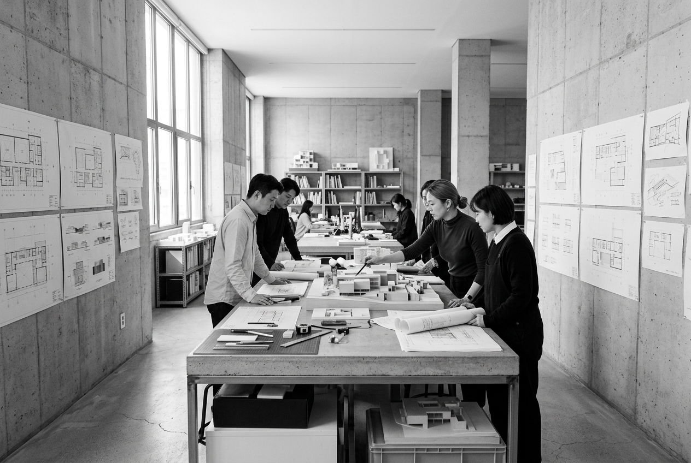
을지 아트센터
서울 중구 · 1,240㎡
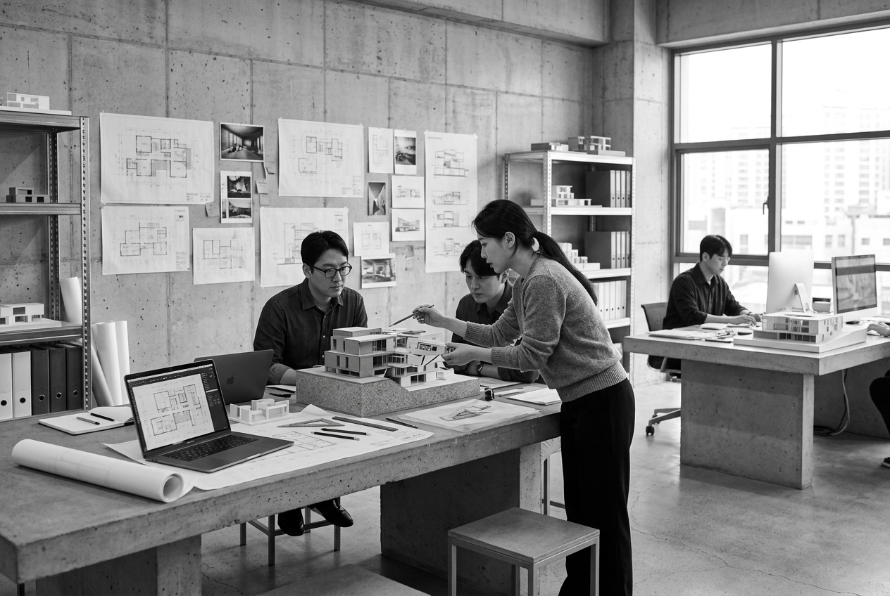
논현 오피스
서울 강남구 · 520㎡
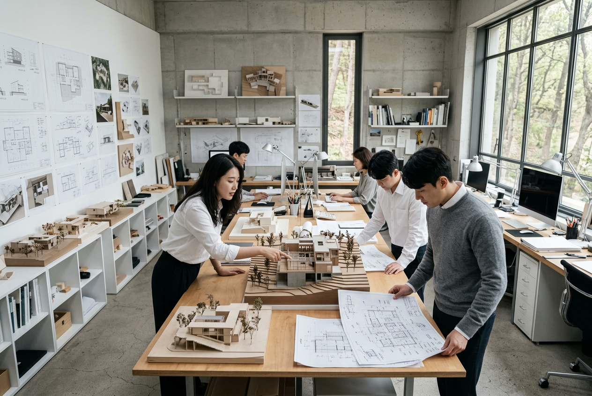
양평 리트릿 하우스
경기 양평군 · 245㎡
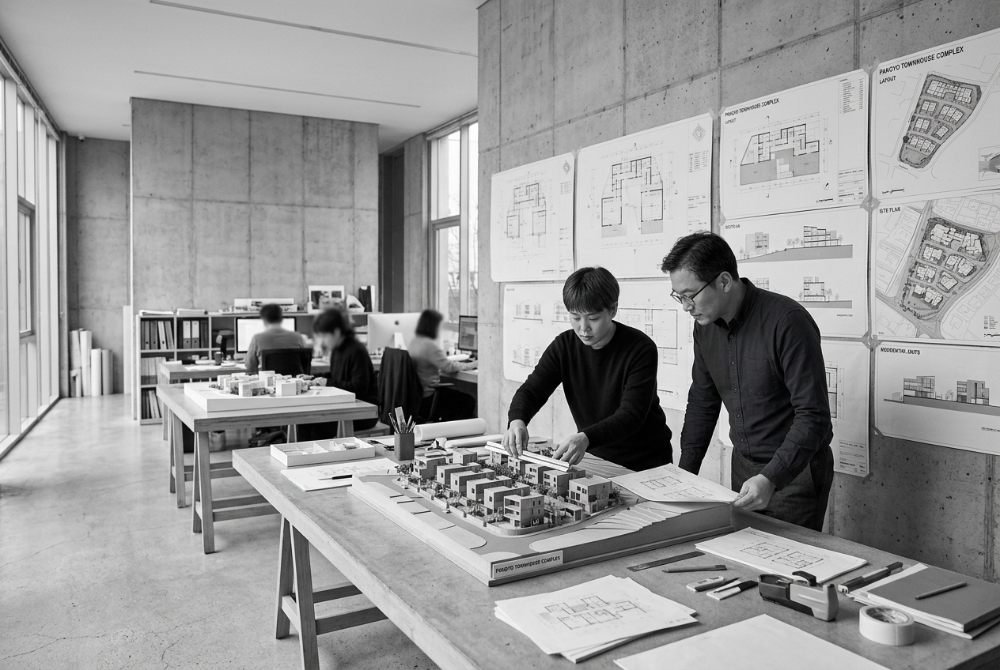
판교 타운하우스
경기 성남시 · 185㎡ × 6세대
양평 리트릿 하우스
자연 속 4인 가족의 주말 거처.
대지의 경사를 거스르지 않고,
풍경이 거실로 들어오는 집을 만들었습니다.
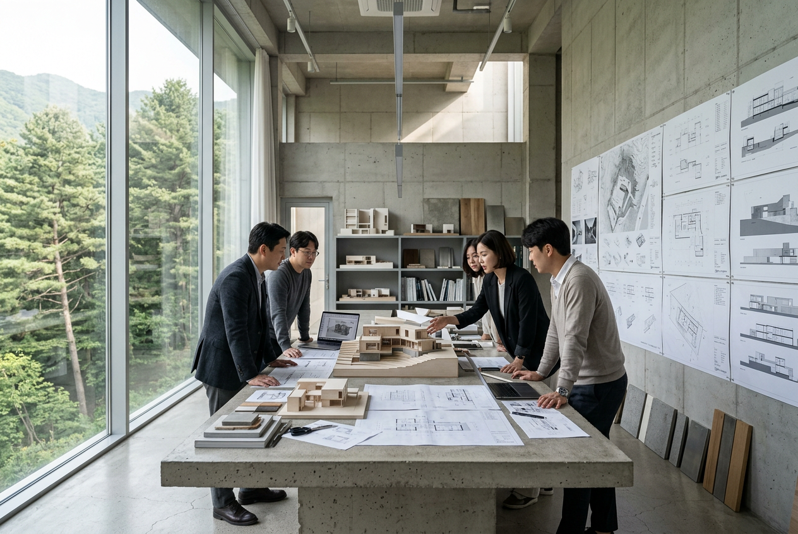
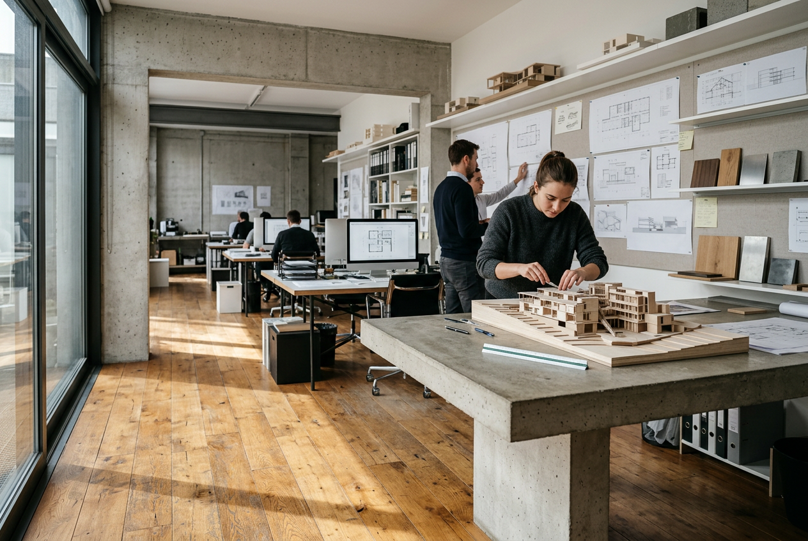
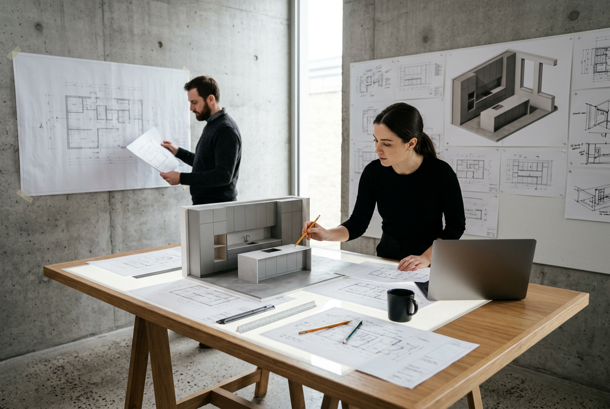
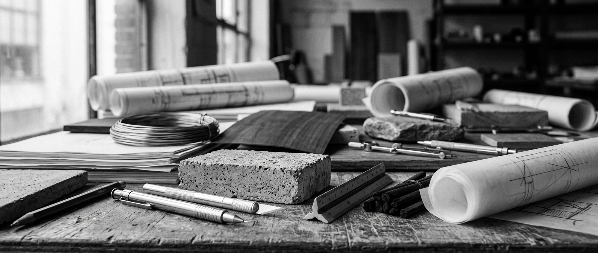
"공간은 그곳에 머무는
시간의 형태다"
미디어 & 수상
국내외 건축 매체와 기관이 주목한
스튜디오 아키브의 작업들.
대한건축사협회 작품상
한남 레지던스 — 도심 주거 건축 부문 우수상 수상. 좁은 대지에서의 공간 확장 전략과 주변 맥락과의 조화를 높이 평가받았습니다.
ArchDaily Feature
양평 리트릿 하우스가 ArchDaily의 'Best Houses of 2023' 선정. 자연과의 경계를 허무는 설계가 주목받았습니다.
Dezeen Interview
"한국 건축의 새로운 내러티브"라는 제목으로 대표 인터뷰 게재.
서울시 건축상
을지 아트센터 — 공공건축 부문 장려상.
월간 건축문화
'주목할 젊은 건축가 10팀' 선정.
사람들
이재원
서울대 건축학과, AA School(런던) 졸업. 15년간 주거와 문화공간을 넘나들며 "살아있는 공간"을 설계해왔습니다.
KIRA 등록건축사 제 A-4821호
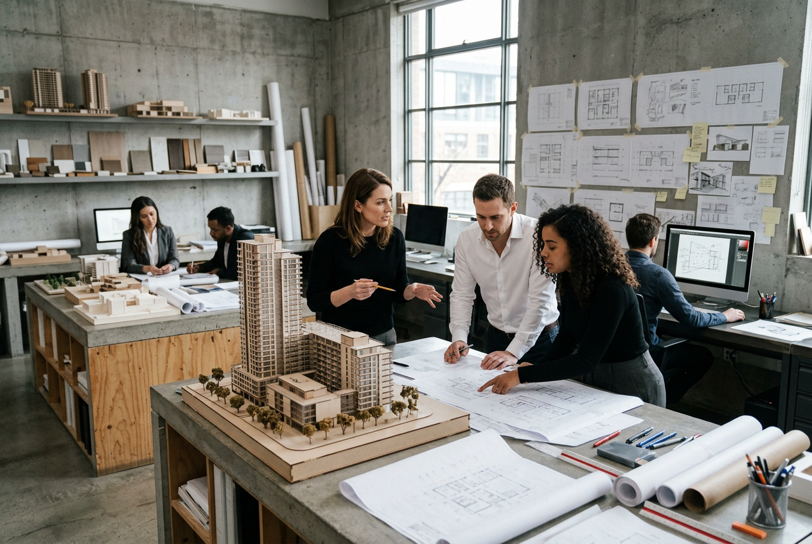
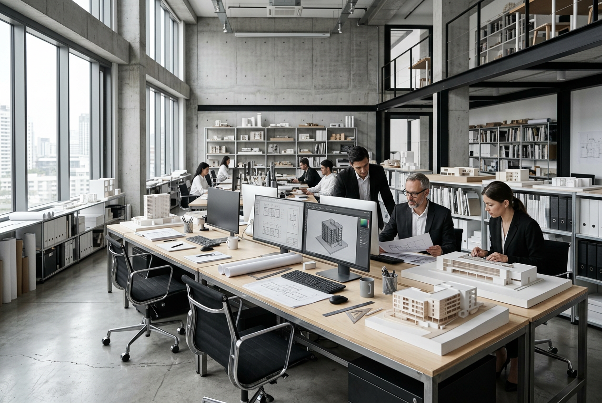
함께 만드는 사람들
박서연
Design Director · 홍익대 건축학과, 12년 경력
김태호
Project Manager · 한양대 건축공학과, 8년 경력
정민지
Project Manager · 연세대 건축학과, 6년 경력
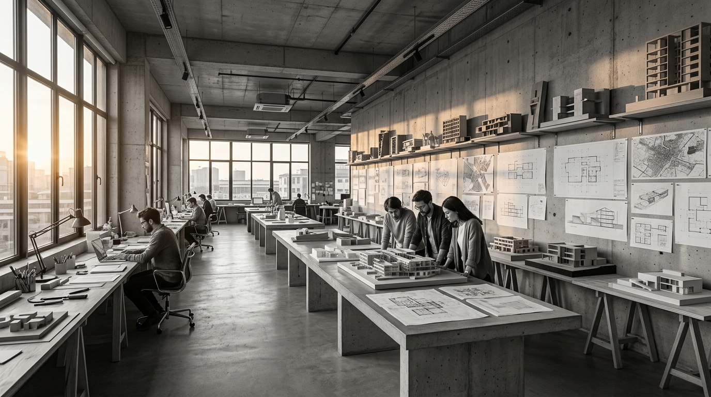
프로젝트를
시작하세요
새로운 공간에 대한 이야기를 들려주세요.
커피 한 잔과 함께 시작합니다.